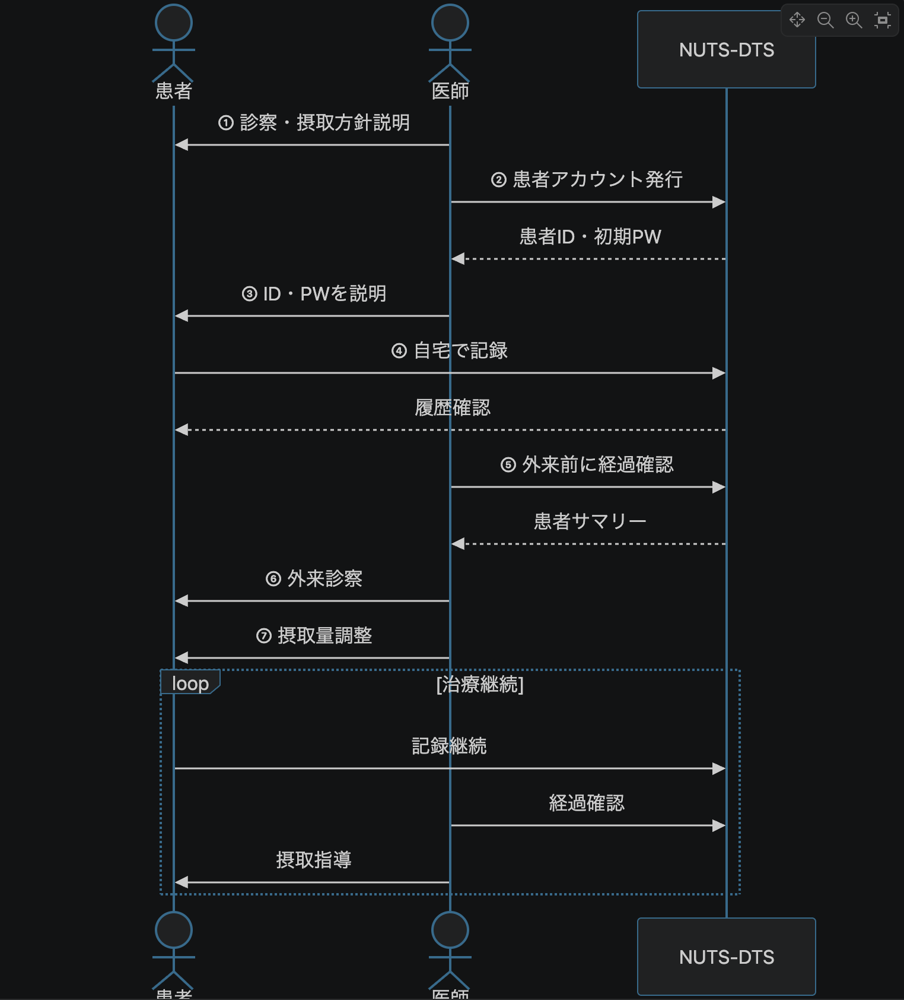

食物アレルギー記録システム
利用手順書
本手順書は、システム全体の運用イメージを確認したうえで、医師用画面と患者用画面の操作方法を分けて確認できるHTMLマニュアルです。
システム概要
運用全体の流れ
本システムは、診察時に発行した患者IDを用いて、患者さんが自宅で摂取状況と症状を記録し、医師が外来前に経過を確認するための記録補助システムです。
診察→アカウント発行→自宅記録→外来確認→摂取量調整→継続管理

診察、患者アカウント発行、自宅記録、外来前の経過確認、摂取量調整までの全体像です。
利用手順
対象ユーザー
| 区分 | 主な利用者 | できること |
|---|---|---|
| 医師用 | 医師・管理者 | 患者の摂取記録確認、患者管理、医師管理、CSV出力 |
| 患者用 | 患者・保護者 | 摂取記録の入力、過去記録の確認、カレンダー確認、参考情報の確認 |
注意事項
本システムは記録補助を目的とします。診断・治療・摂取量の判断は必ず主治医に相談してください。